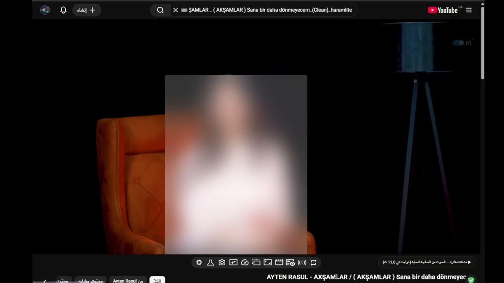

الإصدار 1.1.0
تثبيت الإضافة
أرسل أي فيديو مباشرة إلى تطبيق HaramLite على حاسوبك، أو استمتع بـ «المشاهدة بعد إزالة الموسيقى» داخل مشغّل يوتيوب مع تخطي فترات الصمت فورياً — دون رفع أي ملف إلى السحابة وبلا أي تتبع.
يوقف فيديو الصفحة فوراً لعدم سماع الموسيقى، ويبدأ عملية التنزيل والفصل محلياً مع إظهار نسبة % الإنجاز الحية.
يشغّل الصوت بعد إزالة الموسيقى من حاسوبك بالتزامن، مع قفز تلقائي فوق لحظات الصمت المحذوفة (انقر يمين للخيارات).
الجسر بين المتصفح وتطبيق HaramLite
شرح مبسّط لكيفية عمل HaramLite Bridge: التثبيت، وربط الإضافة بالتطبيق، والمشاهدة بعد إزالة الموسيقى داخل يوتيوب.

لا يُحمَّل الفيديو من يوتيوب إلا عند ضغطك على زر التشغيل — الصفحة نفسها لا تُجري أي طلب خارجي.
المشاهدة على يوتيوب: youtu.be/0b7JrhqqGk8
تكامل فوري وسلس بين صفحات التصفح وتطبيق المعالجة المحلي على حاسوبك.
يشغّل الصوت المعالَج محلياً داخل مشغّل يوتيوب بالتزامن مع الفيديو، بعد كتم صوت الصفحة المليء بالموسيقى تلقائياً.
تتحول الأجزاء الموسيقية المحذوفة إلى فترات صمت، وتتخطاها الإضافة تلقائيًا مع استمرار عرض الفيديو بسلاسة.
انقر بزر الفأرة الأيمن على أي رابط أو صفحة أو فيديو واختر «أرسل إلى HaramLite» لبدء المعالجة فوراً في الخلفية.
تتصل الإضافة بحاسوبك عبر قناة كروم المحلية (Native Messaging)؛ لا خوادم، ولا طلبات إنترنت، ولا تسجيل حسابات.
خطوات بسيطة لربط الإضافة بتطبيقك المحلي وضمان التواصل الآمن بينهما.
الإضافة عبارة عن جسر محلي وليست خدمة سحابية، لذا يجب أن يكون التطبيق المكتبي مثبتاً على نظام ويندوز 10 أو 11.
افتح تطبيق HaramLite ← انتقل إلى الإعدادات ← ضع علامة صح على «تفعيل التكامل مع المتصفح» (يقوم التطبيق بتسجيل مفتاح Native Messaging Host تلقائياً في السجل).
أضف الإضافة إلى متصفحك (متوافقة مع Google Chrome، Microsoft Edge، Brave، وجميع متصفحات Chromium).
الإضافة نفسها لا تجري أي اتصال مع خوادم خارجية؛ كل الاتصال محلي عبر القناة الداخلية com.harammute.haramlite.
صلاحية التبويب النشط عند النقر فقط، وقائمة الفأرة، ونص برمجي مخصّص ليوتيوب لإظهار زري التحكم وتشغيل الصوت بعد إزالة الموسيقى.
لا توجد معرفات تتبع، ولا تجميع لسجل التصفح، ولا استخدام لأي إعلانات أو أدوات تحليل أداء سحابية.